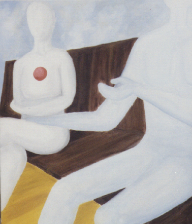

|
|
|
|
|
|
| The Third (of 6) | |
|  | Exactly What She Expected
She contains her emotions in a tight ball. She folds her legs away from him. She crosses her arms to protect herself and her emotions. But he is oblivious. He pays no attention as he talks. He cannot see that his advances are unwelcome. He attempts to bridge the distance between them by touching her leg, but she seperates herself from him by turning away. Some people find this painting tense, since they are uncomfortable with the position of his hand. To that I say, GREAT, since it was meant to be tense and uncomfortable. |
I'd love to hear any of your thoughts or interpretations of my art.
If you have a collection of art works, I'd love to see it too.
email me